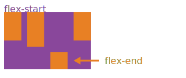

The Flexbox layout#
The HBox and VBox classes above are special cases of the Box widget.
The Box widget enables the entire CSS flexbox spec as well as the Grid layout spec, enabling rich reactive layouts in the Jupyter notebook. It aims at providing an efficient way to lay out, align and distribute space among items in a container.
Again, the whole flexbox spec is exposed via the layout attribute of the container widget (Box) and the contained items. One may share the same layout attribute among all the contained items.
Acknowledgement#
The following flexbox tutorial on the flexbox layout follows the lines of the article A Complete Guide to Flexbox by Chris Coyier, and uses text and various images from the article with permission.
Basics and terminology#
Since flexbox is a whole module and not a single property, it involves a lot of things including its whole set of properties. Some of them are meant to be set on the container (parent element, known as “flex container”) whereas the others are meant to be set on the children (known as “flex items”). If regular layout is based on both block and inline flow directions, the flex layout is based on “flex-flow directions”. Please have a look at this figure from the specification, explaining the main idea behind the flex layout.

Basically, items will be laid out following either the main axis (from main-start to main-end) or the cross axis (from cross-start to cross-end).
main axis- The main axis of a flex container is the primary axis along which flex items are laid out. Beware, it is not necessarily horizontal; it depends on the flex-direction property (see below).main-start | main-end- The flex items are placed within the container starting from main-start and going to main-end.main size- A flex item’s width or height, whichever is in the main dimension, is the item’s main size. The flex item’s main size property is either the ‘width’ or ‘height’ property, whichever is in the main dimension. cross axis - The axis perpendicular to the main axis is called the cross axis. Its direction depends on the main axis direction.cross-start | cross-end- Flex lines are filled with items and placed into the container starting on the cross-start side of the flex container and going toward the cross-end side.cross size- The width or height of a flex item, whichever is in the cross dimension, is the item’s cross size. The cross size property is whichever of ‘width’ or ‘height’ that is in the cross dimension.
Properties of the parent#

display#
display can be flex or inline-flex. This defines a flex container (block or inline).
flex-flow#
flex-flow is a shorthand for the flex-direction and flex-wrap properties, which together define the flex container’s main and cross axes. Default is row nowrap.
flex-direction(column-reverse | column | row | row-reverse )This establishes the main-axis, thus defining the direction flex items are placed in the flex container. Flexbox is (aside from optional wrapping) a single-direction layout concept. Think of flex items as primarily laying out either in horizontal rows or vertical columns.

flex-wrap(nowrap | wrap | wrap-reverse)By default, flex items will all try to fit onto one line. You can change that and allow the items to wrap as needed with this property. Direction also plays a role here, determining the direction new lines are stacked in.

justify-content#
justify-content can be one of flex-start, flex-end, center, space-between, space-around. This defines the alignment along the main axis. It helps distribute extra free space left over when either all the flex items on a line are inflexible, or are flexible but have reached their maximum size. It also exerts some control over the alignment of items when they overflow the line.

align-items#
align-items can be one of flex-start, flex-end, center, baseline, stretch. This defines the default behaviour for how flex items are laid out along the cross axis on the current line. Think of it as the justify-content version for the cross-axis (perpendicular to the main-axis).

align-content#
align-content can be one of flex-start, flex-end, center, baseline, stretch. This aligns a flex container’s lines within when there is extra space in the cross-axis, similar to how justify-content aligns individual items within the main-axis.

Note: this property has no effect when there is only one line of flex items.
Properties of the items#

The flexbox-related CSS properties of the items have no impact if the parent element is not a flexbox container (i.e. has a display attribute equal to flex or inline-flex).
order#
By default, flex items are laid out in the source order. However, the order property controls the order in which they appear in the flex container.

flex#
flex is shorthand for three properties, flex-grow, flex-shrink and flex-basis combined. The second and third parameters (flex-shrink and flex-basis) are optional. Default is 0 1 auto.
flex-growThis defines the ability for a flex item to grow if necessary. It accepts a unitless value that serves as a proportion. It dictates what amount of the available space inside the flex container the item should take up.
If all items have flex-grow set to 1, the remaining space in the container will be distributed equally to all children. If one of the children a value of 2, the remaining space would take up twice as much space as the others (or it will try to, at least).

flex-shrinkThis defines the ability for a flex item to shrink if necessary.
flex-basisThis defines the default size of an element before the remaining space is distributed. It can be a length (e.g.
20%,5rem, etc.) or a keyword. Theautokeyword means “look at my width or height property”.
align-self#
align-self allows the default alignment (or the one specified by align-items) to be overridden for individual flex items.

The VBox and HBox helpers#
The VBox and HBox helper classes provide simple defaults to arrange child widgets in vertical and horizontal boxes. They are roughly equivalent to:
def VBox(*pargs, **kwargs):
"""Displays multiple widgets vertically using the flexible box model."""
box = Box(*pargs, **kwargs)
box.layout.display = 'flex'
box.layout.flex_flow = 'column'
box.layout.align_items = 'stretch'
return box
def HBox(*pargs, **kwargs):
"""Displays multiple widgets horizontally using the flexible box model."""
box = Box(*pargs, **kwargs)
box.layout.display = 'flex'
box.layout.align_items = 'stretch'
return box
Examples#
Four buttons in a VBox. Items stretch to the maximum width, in a vertical box taking 50% of the available space.
from ipywidgets import Layout, Button, Box
items_layout = Layout( width='auto') # override the default width of the button to 'auto' to let the button grow
box_layout = Layout(display='flex',
flex_flow='column',
align_items='stretch',
border='solid',
width='50%')
words = ['correct', 'horse', 'battery', 'staple']
items = [Button(description=word, layout=items_layout, button_style='danger') for word in words]
box = Box(children=items, layout=box_layout)
box
Three buttons in an HBox. Items flex proportionally to their weight.
from ipywidgets import Layout, Button, Box, VBox
# Items flex proportionally to the weight and the left over space around the text
items_auto = [
Button(description='weight=1; auto', layout=Layout(flex='1 1 auto', width='auto'), button_style='danger'),
Button(description='weight=3; auto', layout=Layout(flex='3 1 auto', width='auto'), button_style='danger'),
Button(description='weight=1; auto', layout=Layout(flex='1 1 auto', width='auto'), button_style='danger'),
]
# Items flex proportionally to the weight
items_0 = [
Button(description='weight=1; 0%', layout=Layout(flex='1 1 0%', width='auto'), button_style='danger'),
Button(description='weight=3; 0%', layout=Layout(flex='3 1 0%', width='auto'), button_style='danger'),
Button(description='weight=1; 0%', layout=Layout(flex='1 1 0%', width='auto'), button_style='danger'),
]
box_layout = Layout(display='flex',
flex_flow='row',
align_items='stretch',
width='70%')
box_auto = Box(children=items_auto, layout=box_layout)
box_0 = Box(children=items_0, layout=box_layout)
VBox([box_auto, box_0])
A more advanced example: a reactive form.
The form is a VBox of width ‘50%’. Each row in the VBox is an HBox, that justifies the content with space between..
from ipywidgets import Layout, Button, Box, FloatText, Textarea, Dropdown, Label, IntSlider
form_item_layout = Layout(
display='flex',
flex_flow='row',
justify_content='space-between'
)
form_items = [
Box([Label(value='Age of the captain'), IntSlider(min=40, max=60)], layout=form_item_layout),
Box([Label(value='Egg style'),
Dropdown(options=['Scrambled', 'Sunny side up', 'Over easy'])], layout=form_item_layout),
Box([Label(value='Ship size'),
FloatText()], layout=form_item_layout),
Box([Label(value='Information'),
Textarea()], layout=form_item_layout)
]
form = Box(form_items, layout=Layout(
display='flex',
flex_flow='column',
border='solid 2px',
align_items='stretch',
width='50%'
))
form
A more advanced example: a carousel.
from ipywidgets import Layout, Button, Box, Label
item_layout = Layout(height='100px', min_width='40px')
items = [Button(layout=item_layout, description=str(i), button_style='warning') for i in range(40)]
box_layout = Layout(overflow_x='scroll',
border='3px solid black',
width='500px',
height='',
flex_flow='row',
display='flex')
carousel = Box(children=items, layout=box_layout)
VBox([Label('Scroll horizontally:'), carousel])
Compatibility note#
The overflow_x and overflow_y options are deprecated in ipywidgets 7.5. Instead, use the shorthand property overflow='scroll hidden'. The first part specificies overflow in x, the second the overflow in y.
A widget for exploring layout options#
The widgets below was written by ipywidgets user Doug Redden (@DougRzz).
Use the dropdowns and sliders in the widget to change the layout of the box containing the five colored buttons. Many of the CSS layout optoins described above are available, and the Python code to generate a Layout object reflecting the settings is in a TextArea in the widget.
from layout_preview import layout
layout
---------------------------------------------------------------------------
ModuleNotFoundError Traceback (most recent call last)
Cell In[5], line 1
----> 1 from layout_preview import layout
2 layout
ModuleNotFoundError: No module named 'layout_preview'